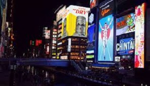

到頓堀
道頓堀是大阪南邊最熱門的娛樂地區也是運河的名稱，許多美食餐飲、酒吧、小吃、服飾精品及電影院等娛樂設施林立在街道兩旁，讓人不禁眼花繚亂，是最受大阪市民歡迎休閒娛樂地區之一。螃蟹道樂、食倒太郎、固力果的大型馬拉松跑者霓紅廣告牌等道頓堀獨特的巨大人像或是動物招牌廣告爭奇鬥艷，甚至有些建築的整個墻面被五光十色的霓虹廣告裝點。每到夜晚，燈光裝飾的招牌、霓虹燈光和道頓堀川水面上的反射光交相輝映，把城市點綴得更加華麗漂亮。除此之外，道頓堀還有上演木偶戲的「文樂座」和表演大眾曲藝「寄席」等傳統藝術的劇場。建於17世紀的法善寺位於道頓堀川沿岸通往南邊的一條道上，掛在寺前的燈籠在這段繁華的商業街上格外耀眼，每當黃昏時分散髮朦朧光芒。道頓堀是連接大阪府大阪市的河木津川與東橫堀川全長2.5公里的運河。這條運河是安井道頓、安井道卜與平野鄉的安藤藤次在1612年用私人財產興建，於1615年完工。當時的摄津大阪籓主松平忠明為獎賞他們的功績，自安井道頓的名子取名而命名為道頓堀。由1660年道頓堀代開始，這地區開始出現許多表演歌舞伎等日本傳統戲劇的劇場，如中座、朝日座等，因而逐漸的成為今日繁榮鬧區。
●歷史
1612年，安井道頓、安井道卜與平野鄉的安藤藤次（平野藤次）以私人財產興建一條運河，1615年完工。松平忠明以道頓的功績，把運河命名為道頓堀。1660年代開始，在鄰近地區出現了多座劇場，如中座、角座、竹本座、浪花座、辯天座、朝日座等。在日本橋北詰東，立有安井道頓及道卜的紀念碑。
●現況
今日的道頓堀是大阪的一個主要商業區域，沿運河兩岸設有商店街及不少飲食店。河畔的大型霓虹廣告牌，也成為大阪的著名標誌，而蟹道樂（かに道楽）總店及門外長30呎的大型蟹模型是道頓堀另一著名地標。
道頓堀上的固力果霓虹廣告堪稱世界最有名戶外廣告板，早於1935年設立。廣告板分別於1955年、1963年、1972年、1996年、1998年及2014年進行更換。在2002年韓日世界盃舉行期間，曾被換成日本國家足球隊的球衣，為日本打氣。2011年3月，日本東北大地震發生後，廣告旁貼上勉勵的布條。2014年10月第6代的廣告板轉用14萬枚LED燈，背景可不斷轉動。
●地址
大阪市中央區道頓堀
●交通
從地下鐵御堂筋線、千日前線、四橋線、近鐵、南海「難波站」出站即達